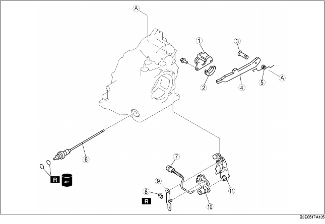
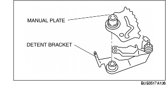
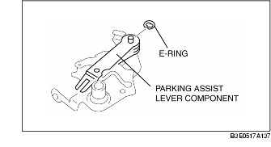
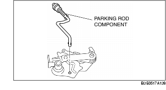

Parking mechanism disassembly/assembly
1. Disassemble in the order indicated in the table.
2. Assemble in the reverse order of disassembly.

Assembly Procedure
1. Install the manual plate to the detent bracket component.

2. Install the parking assist lever component to the detent bracket component and the manual plate.
3. Install the E-ring.

4. Install the parking rod component.
